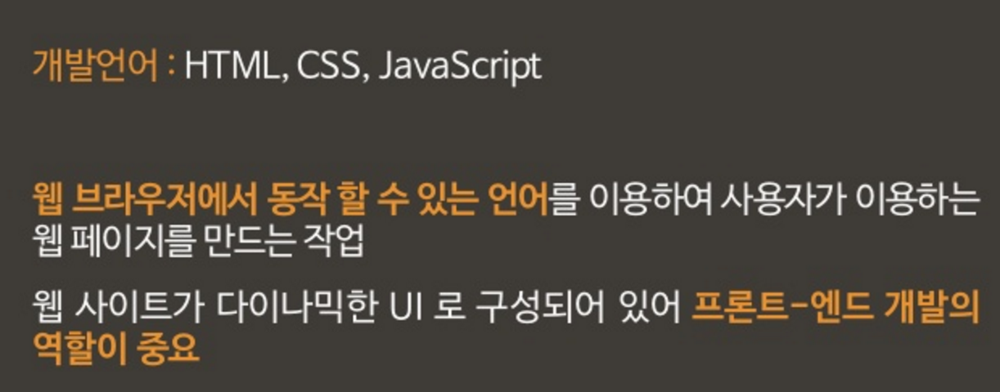
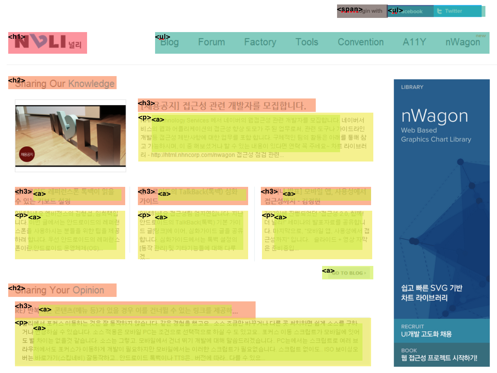

컨텐츠 시작
1. 프론트엔드 개발자란?
개발자의 등급 : 코더 --> 디벨로퍼 --> 엔지니어
2. 프론트엔드 개발자가 고려해야하는것
-
해상도: 물리해상도와 픽셀 해상도 —> 같은 크기지만 해상도는 다를 수 있음. 1280x720, 1920x1080, 3840 X 2160 나중에 따로 스터디 하면 좋을 듯.
-
여러가지 브라우저 대응
-
HTTP (hypertext transfer protocol): 데이터 통신 규약. 데이터는 요청과 응답을 거치는데, 1번 요청하면 1번 응답하는게 원칙입니다.
좀 더 자세히 얘기하자면....
HTML + CSS + JavaScript + 성능측정(애니메이션 퍼포먼스, 서버와의 통신시간, 지연시간) + 웹 렌더링(웹작동방식을 알고 성능 최적화) + 웹접근성(스크린 리더, 점자 등 다양한 장애인 분들이 사용할 수 있도록) + 웹표준(모든 브라우져에서 내 사이트가 잘 보이도록) + 레거시브라우져 대응(IE 6,7,8,9) + R&D (미래기술에 대한 대비 ) + 디자이너와 기획자 납득시키기
(참고) IE6 장례식 페이지
(참고) 2015년 11월 대한민국 브라우저 점유율. 레거시 브라우저(IE6, IE7, IE8, IE9)가 전체의 31%를 차지합니다.
부트스트랩의 장단점
장점
- 편한 개발(빠른 프로토타이핑, 관리자화면)
- 반응형 최적화
- 웹표준 지향
단점
- 무거운 성능
- 획일적인 디자인 (디자이너에게 부담)
- 브라우저 대응. (IE 8이하에서 사용 불가능)
웹의 역사
-
html의 탄생
유럽 입자물리 연구소(CERN)의 물리학자 팀 버너스리. 연구원들이 문서를 공유하기 위한 인터넷 기반의 체계를 설계. 1991년에 발표. —> 인터넷(internet)에서 웹(web)의 시대로 전환.
-
1, 2, 3차 브라우저 전쟁
(참고) 2015년 6월 브라우저 점유율 세계지도
HTML이란 무엇인가?
정의 : Hyper Text markup language
기존의 문서 : 텍스트와 텍스트가 종이로 연결 —> 하이퍼 텍스트 : 텍스트와 텍스트가 하이퍼링크로 연결
마크업 : 원고의 교정부호와 주석을 표현하기 위한 것 —> 문서나 데이터의 구조를 표현함.
초본문표식달기언어 즉, 마크업으로 문서의 구조를 만들고 하이퍼텍스트로 내용을 채우는 언어 == HTML
** 왜 시멘틱하게 해야하나? **
-
사람이 아니라 기계가 읽는 언어! -> 구글에이전트와 같은 기계가 알아 들을 수 있도록 사전에 정의된 규칙을 따라야 한다
(참고) 에이전트 란?
인간(사용자)를 대신하여 정보 자원을 수집, 검색하고 추론하여, 다른 에이전트와 상호 정보 교환등의 일을 수행하는 지능형 에이전트(agent)이다. 지능형 에이전트는 시맨틱 웹 기반 응용 서비스의 핵심 요소라 할 수 있다..
-
웹 접근성 준수 : 차별없는 인터넷 세상. 장애인들을 위한 필수적인 사항!
HTML 요소에 대하여
-
<meta name="viewport" content="">meta : 페이지에 대한 전반적인 오버뷰를 보여줌
viewport : 디바이스 화면의 수치를 명시하는 태그
- <body> —> 사람에게 보여야 하는 모든 요소는 body 태그 안에 있어야 한다.
- <article> —> html 문서 내에서 독립적인 컨텐츠를 명시할때 사용. 그 자체로 하나의 문서가 될 수 있는 요소
- <nav> —> 페이지의 네비게이션을 나타낼 때 사용
- <aside> —> 주변 요소에 대해 부연 설명을 하고 싶을때 사용. 주로 광고요소를 구현할 때 사용(내용적으로 중요하지 않지만 반드시 넣어야 하는 요소)
- <section> —> 보통 제목을 가지고 있는 콘텐츠의 그룹을 나타낼때 사용. ‘구획’이라고 한다.
- <header> —> 로고, 네비게이션등 페이지 헤드요소의 그룹
- <h1> ~ <h6> —> 문단 혹은 섹션(구획)의 제목을 나타냄
- <address> —> 홈페이지를 운영하는 주체의 실제 주소나 연락처를 나타낼때 사용.
(참고)현업에서 사용하는 요소 사용 예
*끝으로...* 프론트엔드 개발자의 영원한 친구 - w3c validator !!
통과하면 일단 문법상의 문제는 없고 html 표준을 준수했다는 의미!
https://validator.w3.org